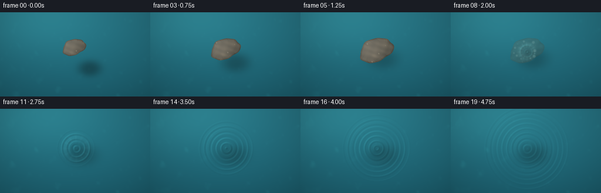
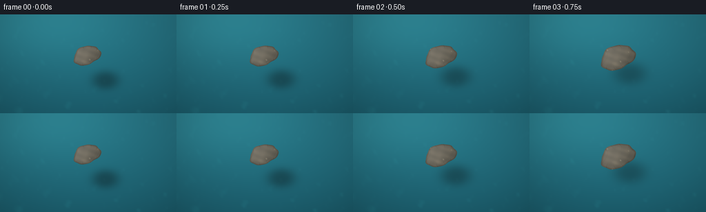
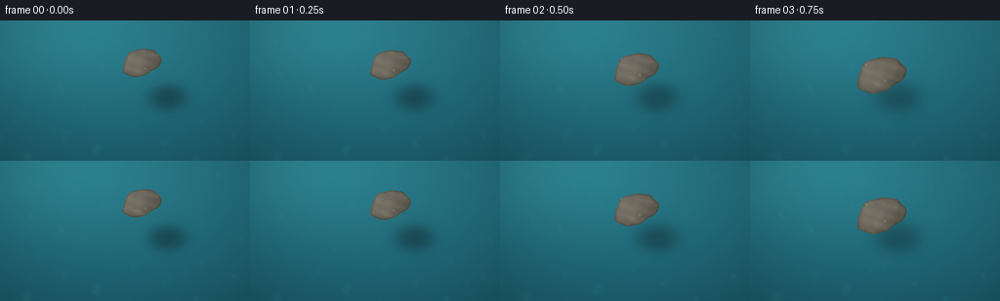
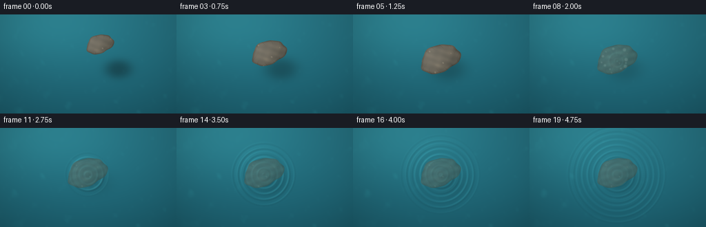

CODING AGENTS AS PIXEL WORLD MODELS
traex/DeepSeek-V4.1-Flash · phygen_007
点击播放 · 原生 RGB 像素
逐轮保存的候选
回放视频、检查图与代码变化。
每份候选均可单独播放。实际图片检查记录在下方工具轨迹中。
候选 01播放与检查图
点击播放 · 原生 RGB 像素

展开代码变化
--- 上一保存版本
+++ 本次保存版本
@@ -0,0 +1,242 @@
+"""Procedural rendering of a stone being placed on a calm pool."""
+
+from pathlib import Path
+
+import numpy as np
+from PIL import Image
+
+import artifact_io
+
+
+ROOT = Path(__file__).resolve().parent
+WIDTH = 256
+HEIGHT = 144
+FRAMES = 20
+FPS = 4.0
+SS = 4 # Render at four times the delivery resolution, then downsample.
+RW = WIDTH * SS
+RH = HEIGHT * SS
+
+
+def smoothstep(edge0, edge1, value):
+ value = np.clip((value - edge0) / (edge1 - edge0), 0.0, 1.0)
+ return value * value * (3.0 - 2.0 * value)
+
+
+def fbm(x, y, phase=0.0):
+ """Cheap deterministic band-limited noise made from warped waves."""
+ result = np.zeros_like(x)
+ result += 0.52 * np.sin(0.0130 * x + 0.0210 * y + phase)
+ result += 0.28 * np.sin(0.0300 * x - 0.0140 * y + 1.7 + phase * 1.3)
+ result += 0.16 * np.sin(0.0590 * x + 0.0430 * y + 3.2 - phase * 0.7)
+ result += 0.09 * np.sin(0.1030 * x - 0.0810 * y + 0.4 + phase * 1.7)
+ return result / 1.05
+
+
+def stone_coverage(x, y, cx, cy, rx, ry, angle, irregular=True):
+ ca, sa = np.cos(angle), np.sin(angle)
+ u = (x - cx) * ca + (y - cy) * sa
+ v = -(x - cx) * sa + (y - cy) * ca
+ theta = np.arctan2(v / ry, u / rx)
+ boundary = 1.0
+ if irregular:
+ boundary += 0.055 * np.sin(3.0 * theta + 0.45)
+ boundary += 0.032 * np.sin(5.0 * theta - 1.1)
+ boundary += 0.018 * np.sin(9.0 * theta + 0.3)
+ q = (u / rx) ** 2 + (v / ry) ** 2
+ return u, v, q, boundary, theta
+
+
+def add_circle(image, cx, cy, radius, color, opacity=1.0, softness=1.0):
+ x0 = max(0, int(cx - radius - softness * 2))
+ x1 = min(image.shape[1], int(cx + radius + softness * 2 + 1))
+ y0 = max(0, int(cy - radius - softness * 2))
+ y1 = min(image.shape[0], int(cy + radius + softness * 2 + 1))
+ if x0 >= x1 or y0 >= y1:
+ return
+ yy, xx = np.mgrid[y0:y1, x0:x1]
+ dist = np.hypot(xx - cx, yy - cy)
+ alpha = 1.0 - smoothstep(radius - softness, radius + softness, dist)
+ alpha *= opacity
+ crop = image[y0:y1, x0:x1]
+ crop[:] = crop * (1.0 - alpha[..., None]) + np.asarray(color) * alpha[..., None]
+
+
+def water_height(x, y, cx, cy, age):
+ """Radial wave train following a gentle impact."""
+ if age <= 0.0:
+ return np.zeros_like(x)
+
+ dx, dy = x - cx, y - cy
+ r = np.hypot(dx, dy)
+ front = 84.0 * age
+ wavelength = 30.0
+ k = 2.0 * np.pi / wavelength
+ omega = 7.0
+ envelope = np.exp(-age * 0.25) * np.exp(-r / 360.0)
+ envelope *= 1.0 - smoothstep(front - 18.0, front + 22.0, r)
+ train = np.sin(k * r - omega * age + 0.7)
+ train += 0.32 * np.sin(k * 1.83 * r - omega * 1.52 * age + 2.1)
+ return 5.2 * envelope * train
+
+
+def render_frame(index):
+ t = index / FPS
+ y, x = np.mgrid[0:RH, 0:RW].astype(np.float32)
+ xn = x / RW
+ yn = y / RH
+
+ # Deep pool with a soft, warm patch of daylight entering from upper left.
+ depth = np.clip(yn * 0.72 + 0.18 * (xn - 0.42) ** 2, 0.0, 1.0)
+ water = np.empty((RH, RW, 3), dtype=np.float32)
+ water[..., 0] = 21.0 + 17.0 * (1.0 - depth)
+ water[..., 1] = 82.0 + 35.0 * (1.0 - depth)
+ water[..., 2] = 98.0 + 36.0 * (1.0 - depth)
+ daylight = np.exp(-((xn - 0.24) ** 2 / 0.18 + (yn - 0.05) ** 2 / 0.20))
+ water += daylight[..., None] * np.array([8.0, 18.0, 17.0], dtype=np.float32)
+
+ # Slow caustics and tiny surface texture keep the undisturbed water alive.
+ phase = 0.11 * t
+ n1 = fbm(x + 19.0 * np.sin(yn * 4.2 + phase), y + 13.0 * np.cos(xn * 3.4), phase)
+ n2 = fbm(x * 1.06 - 17.0 * np.cos(yn * 5.0), y * 0.95 + 11.0 * np.sin(xn * 4.0), phase + 2.4)
+ caustic = np.maximum(0.0, n1 * n2 * 2.3 - 0.03)
+ caustic = np.clip(caustic, 0.0, 1.0) ** 1.7
+ water += caustic[..., None] * np.array([9.0, 25.0, 22.0], dtype=np.float32)
+
+ # The stone is lowered over the center and settles at 1.35 seconds.
+ contact_t = 1.35
+ approach = np.clip(t / contact_t, 0.0, 1.0)
+ eased = approach * approach * (3.0 - 2.0 * approach)
+ height = 1.0 - eased
+ cx = 0.492 * RW + 0.012 * RW * eased
+ cy = 0.415 * RH + 0.035 * RH * eased
+ rx = (34.0 + 16.0 * eased) * SS / 2.0 * 1.20
+ ry = (23.0 + 11.0 * eased) * SS / 2.0 * 1.18
+ angle = -0.34 - 0.04 * eased
+ impact_x = cx + 0.002 * RW
+ impact_y = cy + 0.018 * RH
+
+ # Ripple shading is strongest just after contact and slowly calms.
+ age = max(0.0, t - contact_t)
+ wave = water_height(x, y, impact_x, impact_y, age)
+ if age > 0.0:
+ dx = x - impact_x
+ dy = y - impact_y
+ r = np.maximum(np.hypot(dx, dy), 1.0)
+ front = 84.0 * age
+ wavelength = 30.0
+ k = 2.0 * np.pi / wavelength
+ envelope = np.exp(-age * 0.25) * np.exp(-r / 360.0)
+ envelope *= 1.0 - smoothstep(front - 18.0, front + 22.0, r)
+ slope = 5.2 * envelope * k * np.cos(k * r - 7.0 * age + 0.7)
+ slope += 5.2 * envelope * 0.32 * (k * 1.83) * np.cos(k * 1.83 * r - 10.64 * age + 2.1)
+ gx = slope * dx / r
+ gy = slope * dy / r
+ # Light arrives from the upper left; slopes facing it catch the sky.
+ glint = np.clip(-gx * 0.72 - gy * 0.58, -1.0, 1.0)
+ water += wave[..., None] * np.array([0.36, 1.05, 1.18], dtype=np.float32)
+ water += np.maximum(glint, 0.0)[..., None] * np.array([11.0, 24.0, 24.0], dtype=np.float32)
+ water -= np.maximum(-glint, 0.0)[..., None] * np.array([3.0, 8.0, 9.0], dtype=np.float32)
+
+ # A very small contact dimple and foam collar sell the moment of touch.
+ foam_strength = np.exp(-age * 2.05)
+ if foam_strength > 0.015:
+ dxs = x - impact_x
+ dys = y - impact_y
+ rs = np.hypot(dxs, dys)
+ theta = np.arctan2(dys, dxs)
+ collar_r = 26.0 + 33.0 * age
+ collar_w = 8.0 + 13.0 * age
+ collar = np.exp(-((rs - collar_r) / collar_w) ** 2) * foam_strength
+ spikes = 0.58 + 0.42 * np.maximum(0.0, np.cos(12.0 * theta + 0.4))
+ collar *= spikes
+ collar *= 1.0 - smoothstep(collar_r + 24.0, collar_r + 50.0, rs)
+ water += collar[..., None] * np.array([105.0, 133.0, 126.0], dtype=np.float32)
+
+ dimple = np.exp(-(rs / (22.0 + 28.0 * age)) ** 2) * foam_strength
+ water -= dimple[..., None] * np.array([18.0, 22.0, 16.0], dtype=np.float32)
+
+ # Broad, soft shadow: diffuse while the stone is high, tighter at contact.
+ shadow_x = cx + (11.0 + 16.0 * height) * SS
+ shadow_y = cy + (14.0 + 22.0 * height) * SS
+ shadow_rx = rx * (1.10 + 0.10 * height)
+ shadow_ry = ry * (1.12 + 0.13 * height)
+ su = (x - shadow_x) / shadow_rx
+ sv = (y - shadow_y) / shadow_ry
+ shadow_dist = su * su + sv * sv
+ shadow_alpha = np.exp(-1.8 * shadow_dist ** 1.35) * (0.28 + 0.15 * height)
+ water *= 1.0 - shadow_alpha[..., None] * np.array([0.62, 0.72, 0.72], dtype=np.float32)
+
+ # Surface glints are added after the shadow so the pool still has depth.
+ sparkle = np.maximum(0.0, fbm(x * 1.55 + 120.0, y * 1.55 - 30.0, phase * 2.1 + 0.8) - 0.56)
+ sparkle = sparkle ** 3 * 34.0
+ water += sparkle[..., None] * np.array([0.52, 0.88, 0.82], dtype=np.float32)
+
+ # Irregular, shaded stone. Its texture is attached to the stone rather than the screen.
+ u, v, q, boundary, theta = stone_coverage(x, y, cx, cy, rx, ry, angle)
+ edge_metric = q / (boundary * boundary)
+ stone_alpha = 1.0 - smoothstep(0.96, 1.02, edge_metric)
+ if t > contact_t:
+ submerge = t - contact_t
+ stone_alpha *= max(0.0, 1.0 - smoothstep(0.15, 1.25, submerge)) * 0.78
+
+ local_x = u / rx
+ local_y = v / ry
+ rock_noise = fbm(u * 1.65 + 700.0, v * 1.65 - 400.0, 0.0)
+ rock_noise += 0.34 * np.sin(0.087 * u - 0.119 * v + 1.1)
+ rock_noise /= 1.34
+ nz = np.sqrt(np.clip(1.0 - np.clip(edge_metric, 0.0, 1.0), 0.0, 1.0))
+ diffuse = np.clip(-0.54 * local_x - 0.58 * local_y + 0.62 * nz, 0.0, 1.0)
+ rim = smoothstep(0.70, 1.00, edge_metric) * (1.0 - smoothstep(0.97, 1.02, edge_metric))
+ rock = np.empty((RH, RW, 3), dtype=np.float32)
+ rock[..., 0] = 91.0 + 29.0 * diffuse + 12.0 * rock_noise - 15.0 * rim
+ rock[..., 1] = 87.0 + 27.0 * diffuse + 10.0 * rock_noise - 16.0 * rim
+ rock[..., 2] = 78.0 + 25.0 * diffuse + 8.0 * rock_noise - 16.0 * rim
+ rock += np.maximum(0.0, rock_noise - 0.40)[..., None] * np.array([12.0, 10.0, 7.0], dtype=np.float32)
+
+ # Fine cracks and pale mineral flecks.
+ cracks = np.abs(np.sin(0.072 * u + 0.031 * v + 1.7 * np.sin(0.045 * v)))
+ crack_mask = (1.0 - smoothstep(0.025, 0.060, cracks)) * smoothstep(0.25, 0.90, edge_metric)
+ rock -= crack_mask[..., None] * np.array([21.0, 20.0, 18.0], dtype=np.float32)
+ fleck = smoothstep(0.78, 0.96, fbm(u * 2.7 - 100.0, v * 2.7 + 300.0, 1.2))
+ rock += fleck[..., None] * np.array([24.0, 22.0, 18.0], dtype=np.float32)
+
+ if t > contact_t:
+ water_tint = np.array([16.0, 45.0, 47.0], dtype=np.float32)
+ rock = rock * 0.57 + water_tint
+ rock += np.sin(v * 0.16 + t * 3.0)[..., None] * np.array([1.5, 3.5, 3.0], dtype=np.float32)
+
+ water = water * (1.0 - stone_alpha[..., None]) + rock * stone_alpha[..., None]
+
+ # A few short-lived droplets expand from the contact point.
+ if 0.0 < age < 0.95:
+ fade = np.exp(-age * 2.5)
+ for j in range(10):
+ theta_j = 0.31 + j * 2.399 + 0.07 * np.sin(j * 4.1)
+ speed = 58.0 + 17.0 * ((j * 7) % 5)
+ radial = 18.0 + speed * age
+ px = impact_x + radial * np.cos(theta_j)
+ py = impact_y + radial * np.sin(theta_j) * 0.72
+ radius = (1.5 + (j % 3) * 0.8) * SS * (1.0 - 0.35 * min(age / 0.95, 1.0))
+ add_circle(water, px, py, radius, (202, 232, 223), 0.70 * fade, softness=1.1 * SS)
+
+ # Lens vignette and gentle color grade.
+ vignette = 1.0 - 0.17 * (((xn - 0.5) * 1.55) ** 2 + ((yn - 0.5) * 1.20) ** 2)
+ water *= np.clip(vignette, 0.80, 1.0)[..., None]
+ water[..., 0] += 2.2
+ water[..., 1] += 2.8
+ water[..., 2] += 1.8
+
+ water = np.clip(water, 0.0, 255.0).astype(np.uint8)
+ image = Image.fromarray(water, "RGB").resize((WIDTH, HEIGHT), Image.Resampling.LANCZOS)
+ return np.asarray(image, dtype=np.uint8)
+
+
+def main():
+ frames = np.stack([render_frame(i) for i in range(FRAMES)])
+ artifact_io.save(frames, ROOT)
+ print(f"saved {frames.shape} to {ROOT}")
+
+
+if __name__ == "__main__":
+ main()
候选 02播放与检查图
点击播放 · 原生 RGB 像素


展开代码变化
--- 上一保存版本
+++ 本次保存版本
@@ -108,8 +108,8 @@
approach = np.clip(t / contact_t, 0.0, 1.0)
eased = approach * approach * (3.0 - 2.0 * approach)
height = 1.0 - eased
- cx = 0.492 * RW + 0.012 * RW * eased
- cy = 0.415 * RH + 0.035 * RH * eased
+ cx = (0.565 - 0.073 * eased) * RW
+ cy = (0.300 + 0.150 * eased) * RH
rx = (34.0 + 16.0 * eased) * SS / 2.0 * 1.20
ry = (23.0 + 11.0 * eased) * SS / 2.0 * 1.18
angle = -0.34 - 0.04 * eased
@@ -165,6 +165,7 @@
sv = (y - shadow_y) / shadow_ry
shadow_dist = su * su + sv * sv
shadow_alpha = np.exp(-1.8 * shadow_dist ** 1.35) * (0.28 + 0.15 * height)
+ shadow_alpha *= 1.0 - 0.55 * smoothstep(0.0, 1.2, age)
water *= 1.0 - shadow_alpha[..., None] * np.array([0.62, 0.72, 0.72], dtype=np.float32)
# Surface glints are added after the shadow so the pool still has depth.
@@ -178,7 +179,7 @@
stone_alpha = 1.0 - smoothstep(0.96, 1.02, edge_metric)
if t > contact_t:
submerge = t - contact_t
- stone_alpha *= max(0.0, 1.0 - smoothstep(0.15, 1.25, submerge)) * 0.78
+ stone_alpha *= 0.86 - 0.18 * smoothstep(0.10, 1.60, submerge)
local_x = u / rx
local_y = v / ry
@@ -235,6 +236,35 @@
def main():
frames = np.stack([render_frame(i) for i in range(FRAMES)])
artifact_io.save(frames, ROOT)
+ try:
+ import av
+
+ with av.open(str(ROOT / "video.mp4"), mode="w") as container:
+ stream = container.add_stream("libx264", rate=int(FPS))
+ stream.width = WIDTH
+ stream.height = HEIGHT
+ stream.pix_fmt = "yuv420p"
+ stream.options = {"crf": "16", "preset": "medium"}
+ for frame in frames:
+ video_frame = av.VideoFrame.from_ndarray(frame, format="rgb24")
+ for packet in stream.encode(video_frame):
+ container.mux(packet)
+ for packet in stream.encode():
+ container.mux(packet)
+ except (ImportError, RuntimeError):
+ import cv2
+
+ writer = cv2.VideoWriter(
+ str(ROOT / "video.mp4"),
+ cv2.VideoWriter_fourcc(*"mp4v"),
+ FPS,
+ (WIDTH, HEIGHT),
+ )
+ if not writer.isOpened():
+ raise RuntimeError("no MP4 encoder available")
+ for frame in frames:
+ writer.write(frame[..., ::-1])
+ writer.release()
print(f"saved {frames.shape} to {ROOT}")
候选 04播放与检查图
点击播放 · 原生 RGB 像素


展开代码变化
--- 上一保存版本
+++ 本次保存版本
@@ -73,7 +73,7 @@
wavelength = 30.0
k = 2.0 * np.pi / wavelength
omega = 7.0
- envelope = np.exp(-age * 0.25) * np.exp(-r / 360.0)
+ envelope = np.exp(-age * 0.18) * np.exp(-r / 420.0)
envelope *= 1.0 - smoothstep(front - 18.0, front + 22.0, r)
train = np.sin(k * r - omega * age + 0.7)
train += 0.32 * np.sin(k * 1.83 * r - omega * 1.52 * age + 2.1)
@@ -134,9 +134,9 @@
gy = slope * dy / r
# Light arrives from the upper left; slopes facing it catch the sky.
glint = np.clip(-gx * 0.72 - gy * 0.58, -1.0, 1.0)
- water += wave[..., None] * np.array([0.36, 1.05, 1.18], dtype=np.float32)
- water += np.maximum(glint, 0.0)[..., None] * np.array([11.0, 24.0, 24.0], dtype=np.float32)
- water -= np.maximum(-glint, 0.0)[..., None] * np.array([3.0, 8.0, 9.0], dtype=np.float32)
+ water += wave[..., None] * np.array([0.62, 1.70, 1.90], dtype=np.float32)
+ water += np.maximum(glint, 0.0)[..., None] * np.array([16.0, 33.0, 33.0], dtype=np.float32)
+ water -= np.maximum(-glint, 0.0)[..., None] * np.array([4.0, 10.0, 11.0], dtype=np.float32)
# A very small contact dimple and foam collar sell the moment of touch.
foam_strength = np.exp(-age * 2.05)
候选 05播放与检查图
点击播放 · 原生 RGB 像素

展开代码变化
--- 上一保存版本
+++ 本次保存版本
@@ -229,7 +229,7 @@
water[..., 2] += 1.8
water = np.clip(water, 0.0, 255.0).astype(np.uint8)
- image = Image.fromarray(water, "RGB").resize((WIDTH, HEIGHT), Image.Resampling.LANCZOS)
+ image = Image.fromarray(water).resize((WIDTH, HEIGHT), Image.Resampling.LANCZOS)
return np.asarray(image, dtype=np.uint8)
可观测工具轨迹
实际执行的命令与返回图片。
命令 1exit 0
/bin/bash -lc "pwd && rg --files -g '"'!**/.git/**'"' | sed -n '1,120p'"
命令 2exit 0
/bin/bash -lc "sed -n '1,240p' prompt.txt"
命令 3exit 0
/bin/bash -lc "sed -n '1,280p' GENERATION_RULES.md"
命令 4exit 0
/bin/bash -lc "sed -n '1,280p' task_spec.json"
命令 5exit 0
/bin/bash -lc "ffmpeg -version | sed -n '1,8p'; python3 --version; which ffprobe; which magick || true; which convert || true"
命令 6exit 0
/bin/bash -lc "sed -n '1,320p' artifact_io.py"
命令 7exit 0
/bin/bash -lc 'python3 generate.py'
命令 8exit 0
/bin/bash -lc "python3 - <<'PY'
from PIL import Image
for name in ['inspection.png','transition_check.png','frames/00.png','frames/05.png','frames/06.png','frames/10.png','frames/19.png']:
im=Image.open(name)
print(name, im.size, im.mode)
PY"命令 9exit 0
/bin/bash -lc "python3 - <<'PY'
from PIL import Image
import numpy as np
chars=' .:-=+*#%@'
for n in [0,3,5,6,7,10,14,19]:
im=np.asarray(Image.open(f'frames/{n:02d}.png').convert('L'),dtype=float)
im=im.reshape(36,4,64,4).mean((1,3))
lo,hi=np.percentile(im,[2,98]); z=np.clip((im-lo)/(hi-lo+1e-6),0,1)
print(f'\\nFRAME {n:02d}')
for row in z:
print(''.join(chars[int(v*(len(chars)-1))] for v in row))
PY"命令 10exit 0
/bin/bash -lc "ls -lh; du -h pixels.npz index.html inspection.png; python3 - <<'PY'
from PIL import Image
import numpy as np, glob
ims=np.stack([np.asarray(Image.open(p)) for p in sorted(glob.glob('frames/*.png'))]).astype(np.float32)
print('shape',ims.shape)
print('global RGB mean',ims.mean((0,1,2)).round(2),'std',ims.std((0,1,2)).round(2))
for i in range(1,len(ims)):
d=np.abs(ims[i]-ims[i-1])
print(f'{i-1:02d}->{i:02d} mean={d.mean():.2f} p95={np.percentile(d,95):.1f} changed={(d.max(2)>3).mean():.3f}')
PY"命令 11exit 0
/bin/bash -lc "python3 - <<'PY'
mods=['cv2','imageio','imageio_ffmpeg','av','moviepy','matplotlib','skimage','scipy']
for m in mods:
try:
mod=__import__(m)
print(m, 'OK', getattr(mod,'__version__',''))
except Exception as e:
print(m, 'NO', type(e).__name__)
PY"命令 12exit 0
/bin/bash -lc 'python3 generate.py'
命令 13exit 0
/bin/bash -lc "python3 - <<'PY'
from PIL import Image
import numpy as np, glob
for n in [0,2,4,5,6,7,10,14,19]:
im=np.asarray(Image.open(f'frames/{n:02d}.png').convert('L'),dtype=float)
im=im.reshape(36,4,64,4).mean((1,3))
lo,hi=np.percentile(im,[2,98]); z=np.clip((im-lo)/(hi-lo+1e-6),0,1)
chars=' .:-=+*#%@'
print(f'\\nFRAME {n:02d}')
for row in z:
print(''.join(chars[int(v*(len(chars)-1))] for v in row))
ims=np.stack([np.asarray(Image.open(p)) for p in sorted(glob.glob('frames/*.png'))]).astype(np.float32)
print('\\nmeans',ims.mean((1,2)).round(1).tolist())
PY"命令 14exit 1
/bin/bash -lc "python3 - <<'PY'
import cv2, numpy as np
from PIL import Image
cap=cv2.VideoCapture('video.mp4')
frames=[]
while True:
ok, frame=cap.read()
if not ok: break
frames.append(cv2.cvtColor(frame, cv2.COLOR_BGR2RGB))
cap.release()
print('decoded',len(frames),'shape',frames[0].shape if frames else None,'fps',cv2.VideoCapture('video.mp4').get(cv2.CAP_PROP_FPS))
p=np.load('pixels.npz')['pixels'].astype(np.uint32)
rgb=np.stack([(p>>16)&255,(p>>8)&255,p&255],axis=-1).transpose(0,2,3,1).astype(np.uint8)
print('tensor',rgb.shape,rgb.dtype,'range',rgb.min(),rgb.max())
refs=np.stack([np.asarray(Image.open(f'frames/{i:02d}.png')) for i in range(20)])
print('tensor_matches_pngs',np.array_equal(rgb,refs))
if frames:
mae=np.abs(np.asarray(frames,dtype=np.int16)-rgb.astype(np.int16)).mean()
print('decoded_vs_rgb_mae',round(float(mae),3))
PY"命令 15exit 0
/bin/bash -lc "python3 - <<'PY'
import cv2, numpy as np
from PIL import Image
cap=cv2.VideoCapture('video.mp4')
frames=[]
while True:
ok, frame=cap.read()
if not ok: break
frames.append(cv2.cvtColor(frame, cv2.COLOR_BGR2RGB))
cap.release()
p=np.load('pixels.npz')['pixels'].astype(np.uint32)
rgb=np.stack([(p>>16)&255,(p>>8)&255,p&255],axis=-1).transpose(2,0,1,3).astype(np.uint8)
refs=np.stack([np.asarray(Image.open(f'frames/{i:02d}.png')) for i in range(20)])
print('decoded_frames',len(frames))
print('decoded_shape',frames[0].shape)
print('tensor_shape',rgb.shape)
print('tensor_matches_pngs',np.array_equal(rgb,refs))
mae=np.abs(np.asarray(frames,dtype=np.int16)-rgb.astype(np.int16)).mean()
print('decoded_vs_rgb_mae',round(float(mae),3))
PY"命令 16exit 0
/bin/bash -lc 'which chafa || true; which viu || true; which jp2 || true; which img2txt || true; which timg || true'
命令 17exit 1
/bin/bash -lc "python3 - <<'PY'
from PIL import Image
import numpy as np
for i in [0,5,6,7,8,10,12,15,19]:
a=np.asarray(Image.open(f'frames/{i:02d}.png').convert('RGB'),dtype=float)
g=a.mean(2)
# Local high-pass energy away from borders, plus luminance range in center.
hp=g[2:-2,2:-2]-np.pad(g,((1,1),(1,1)),mode='edge')[1:-1,1:-1]
# Sobel-like gradient via np.
gy,gx=np.gradient(g)
grad=np.hypot(gx,gy)
print(f'{i:02d} mean={g.mean():.1f} std={g.std():.1f} grad={grad.mean():.2f} p99grad={np.percentile(grad,99):.1f} center_range={np.ptp(g[30:110,55:205]):.0f}')
PY"命令 18exit 0
/bin/bash -lc "python3 - <<'PY'
from PIL import Image
import numpy as np
for i in [0,5,6,7,8,10,12,15,19]:
g=np.asarray(Image.open(f'frames/{i:02d}.png').convert('L'),dtype=float)
gy,gx=np.gradient(g)
grad=np.hypot(gx,gy)
print(f'{i:02d} mean={g.mean():.1f} std={g.std():.1f} grad={grad.mean():.2f} p99grad={np.percentile(grad,99):.1f} center_range={np.ptp(g[30:110,55:205]):.0f}')
PY"命令 19exit 0
/bin/bash -lc 'python3 generate.py'
命令 20exit 0
/bin/bash -lc "python3 - <<'PY'
import numpy as np, cv2
from PIL import Image
for i in [0,5,6,7,8,10,12,15,19]:
g=np.asarray(Image.open(f'frames/{i:02d}.png').convert('L'),dtype=float)
gy,gx=np.gradient(g); grad=np.hypot(gx,gy)
print(f'{i:02d} mean={g.mean():.1f} std={g.std():.1f} grad={grad.mean():.2f} p99={np.percentile(grad,99):.1f}')
cap=cv2.VideoCapture('video.mp4'); n=int(cap.get(cv2.CAP_PROP_FRAME_COUNT)); fps=cap.get(cv2.CAP_PROP_FPS); w=int(cap.get(cv2.CAP_PROP_FRAME_WIDTH)); h=int(cap.get(cv2.CAP_PROP_FRAME_HEIGHT)); ok,fr=cap.read(); cap.release()
print('video',n,fps,w,h,'first',ok)
p=np.load('pixels.npz')['pixels'].astype(np.uint32)
rgb=np.stack([(p>>16)&255,(p>>8)&255,p&255],-1).transpose(2,0,1,3).astype(np.uint8)
refs=np.stack([np.asarray(Image.open(f'frames/{i:02d}.png')) for i in range(20)])
print('tensor',rgb.shape,rgb.dtype,'matches_png',np.array_equal(rgb,refs))
PY"命令 21exit 0
/bin/bash -lc "python3 generate.py && python3 - <<'PY'
import json, cv2, numpy as np
from PIL import Image
from pathlib import Path
spec=json.loads(Path('task_spec.json').read_text())
frames=np.load('pixels.npz')['pixels']
assert frames.shape == (spec['frames'], spec['width'], spec['height'])
assert len(list(Path('frames').glob('*.png'))) == spec['frames']
cap=cv2.VideoCapture('video.mp4')
assert int(cap.get(cv2.CAP_PROP_FRAME_COUNT)) == spec['frames']
assert abs(cap.get(cv2.CAP_PROP_FPS)-spec['fps']) < 0.01
assert int(cap.get(cv2.CAP_PROP_FRAME_WIDTH)) == spec['width']
assert int(cap.get(cv2.CAP_PROP_FRAME_HEIGHT)) == spec['height']
cap.release()
assert Path('index.html').stat().st_size > 1000
print('validation passed: 20 RGB frames, 256x144, 4 fps, video and player present')
PY
ls -lh video.mp4 pixels.npz index.html inspection.png"命令 22exit 0
/bin/bash -lc "python3 - <<'PY'
import json, cv2, numpy as np
from pathlib import Path
spec=json.loads(Path('task_spec.json').read_text())
packed=np.load('pixels.npz')['pixels']
assert packed.shape == (spec['height'], spec['width'], spec['frames']), packed.shape
assert packed.dtype == np.uint32
pngs=sorted(Path('frames').glob('*.png'))
assert len(pngs) == spec['frames']
for p in pngs:
assert cv2.imread(str(p)).shape == (spec['height'], spec['width'], 3)
cap=cv2.VideoCapture('video.mp4')
count=int(cap.get(cv2.CAP_PROP_FRAME_COUNT))
fps=cap.get(cv2.CAP_PROP_FPS)
w=int(cap.get(cv2.CAP_PROP_FRAME_WIDTH)); h=int(cap.get(cv2.CAP_PROP_FRAME_HEIGHT))
assert (count,w,h)==(spec['frames'],spec['width'],spec['height'])
assert abs(fps-spec['fps'])<0.01
cap.release()
assert Path('index.html').stat().st_size > 1000
print(f'validation passed: {count} RGB frames, {w}x{h}, {fps:g} fps, {count/fps:g}s')
print('artifacts: video.mp4, pixels.npz, frames/, index.html, inspection.png')
PY
python3 -m py_compile generate.py"保存候选 5 份；完成命令 22 次；可验证图片返回 0 张。原始 API 响应与完整日志保留在本地。